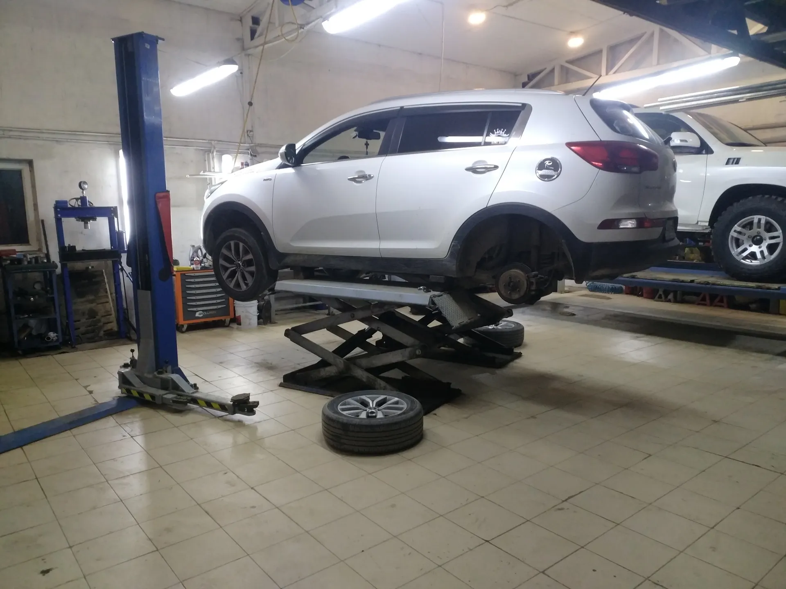
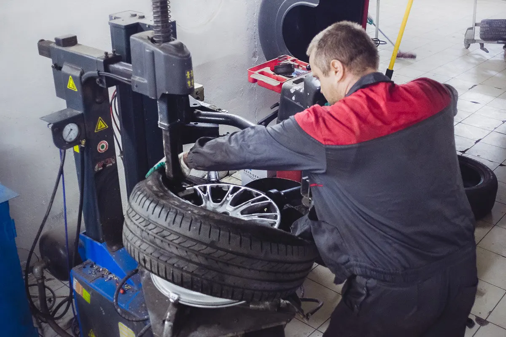
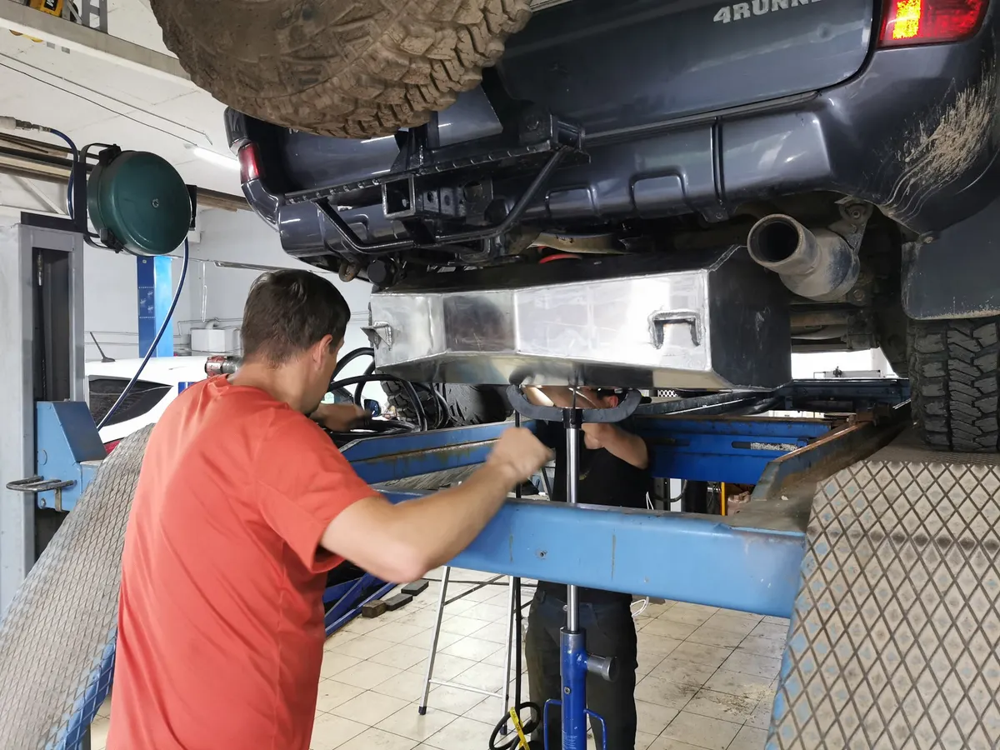
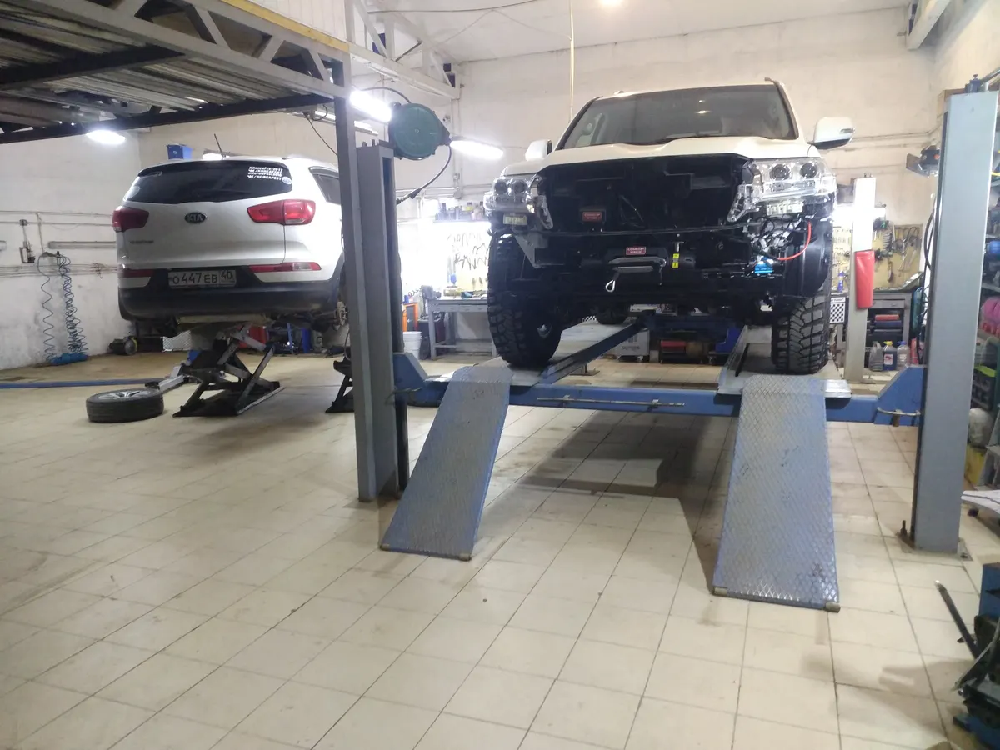

Автосервис · Обнинск
Автосервис в Обнинске по записи – берёмся за сложное
Шиномонтаж, развал-схождение, двигатели, ходовая. Сумму называем до начала работ, лишнего в чек не дописываем.
- 225 отзывов на Яндекс.Картах
- Сумму называем до начала работ
- Запись по телефону или WhatsApp

Как мы работаем
Входит
- Смотрим машину и называем сумму до начала
- Показываем и объясняем, что нашли
- Запчасти заказываем под ваш автомобиль
- Отдаём машину в срок и с чеком
Отдельно, если нужно
- Лишних работ не навязываем
- За то, что не делали, не берём
- Если не можем сделать – скажем прямо, не берёмся
Цена известна до начала работ
Нормочас 1 500–3 500 ₽. Стоимость по вашей машине называем после диагностики – до начала работ, а не из чека.
Диагностика и ТО
- Диагностика ходовой и двигателяосмотр, компьютерная диагностика, эндоскопияуточнить
- Плановое ТО, замена масла и фильтровуточнить
- Заправка и ремонт кондиционеровищем причину утечки, а не только заправляемуточнить
Ремонт
- Нормочас1 500–3 500 ₽
- Замена цепи ГРМкомплект с оригинальными запчастями под заказот 8 000 ₽
- Ремонт ходовойуточнить
- Капремонт двигателяуточнить
Шиномонтаж
- Сезонная переобувка комплектауточнить
- Развал-схождениеплатите только за оси, которые регулируемуточнить
- Ремонт проколовуточнить
- Проточка тормозных дисковскажем честно, если проще заменитьуточнить
Точную сумму по вашей машине называем после диагностики и до начала работ. Если задняя ось не требует регулировки – честно минусуем с суммы: вы платите только за сделанное.
Как проходит
- 01
Звоните или пишете в WhatsApp
Выбираем удобное время, называем ориентир по цене.
- 02
Приехали – подъёмник уже свободен
Принимают точно к назначенному времени.
- 03
Диагностика и согласование суммы
Показываем, что нашли, и считаем до начала работ.
- 04
Ремонт и выдача в срок
От диагностики до выдачи – от одного дня, вместе с заказом запчастей.



Что обещаем
Сумму называем до начала работ
И не меняем её при выдаче: всё, как обговорили.
Не навязываем лишнее
Если проточка дисков не нужна – скажем честно и не будем её делать.
Берёмся за сложное
Прикипевшие диски, редкие машины, капремонты – то, за что другие не берутся.
Платите за результат
Задняя ось не требовала регулировки – минусуем с суммы. Это в отзывах, а не в рекламе.
Отзывы с Яндекс.Карт
«Обслуживаю свой Ford только тут! Администратор Сергей — вежливый, а главное знающий и честный человек! Быстро, качественно и понятно дал консультацию. Договорились на работы и в срок было выполнено. Ремонт только здесь.»
Дмитрий А. · 8 августа 2025
«Делал здесь развал-схождение на Toyota RAV4. Люди знают, что делают, все договорённости соблюдаются, время записи чёткое. Задняя ось не потребовала регулировки — и ребята честно минусовали с оговорённой суммы.»
Денис Д · 20 мая 2024
«В этот сервис обратились по отзывам. Делали ходовую на Опеле. Остались очень довольны. Быстро, цены разумные и сделали хорошо.»
Виктория Г. · 13 августа 2025
Отзывы с карточки на Яндекс.Картах, без правок.
Частые вопросы
Сколько стоит ремонт?
Нормочас 1 500–3 500 ₽. Точную сумму называем после диагностики, до начала работ.
Как записаться?
По телефону +7 (920) 616-36-60 или в WhatsApp – выберите услугу, день и время на этом сайте, сообщение уйдёт само.
Как быстро сделаете?
Принимаем точно к записи. По отзывам клиентов запись занята на 1–2 недели – лучше планировать заранее.
Берётесь за шиномонтаж и развал?
Да: сезонная переобувка, развал-схождение, проколы, проточка дисков.
Запишитесь к своему времени
- Адрес
- Обнинск, ул. И.И. Воронцова, 20, Обнинске
- Часы
- Часы работы уточняйте по телефону
- Телефон
- +7 (920) 616-36-60